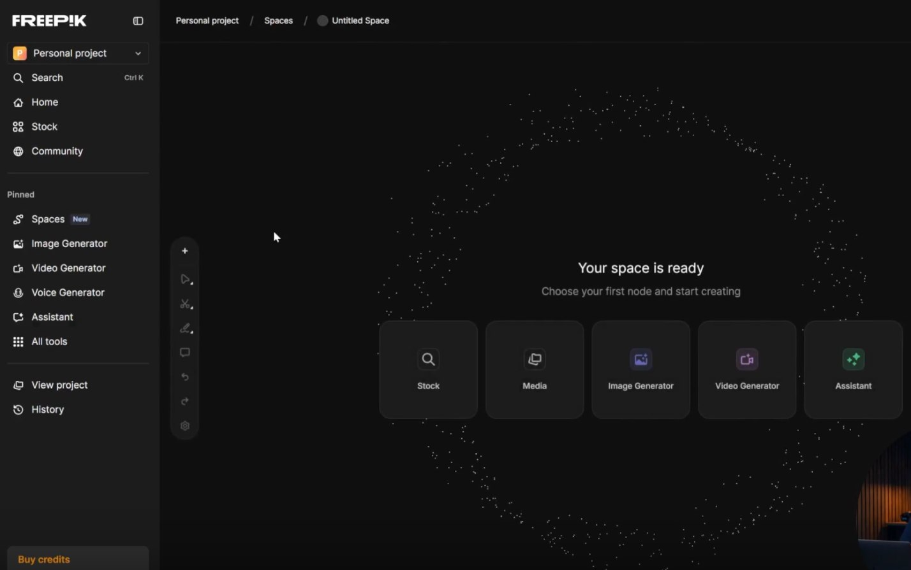

🔊 Por que o Áudio Vale 50%
Em 1979, o editor de som Walter Murch — responsável por Apocalypse Now, O Poderoso Chefão e Ficção Científica — formulou o que ficou conhecido como a "Regra de Murch": o som representa 50% da experiência cinematográfica. Décadas de pesquisa em neurociência confirmaram isso: o cérebro processa informação auditiva antes da visual.

Canvas do Freepik Spaces com nodes de áudio — a camada sonora é planejada como parte do pipeline, não adicionada no fim

Pipeline de produção completo — áudio e imagem são planejados juntos, não em sequência
🔊 O Experimento do Silêncio
Tire o áudio de qualquer cena de ação de blockbuster. O impacto visual cai 70-80%. Agora coloque a trilha de Hans Zimmer em cenas comuns de uma pessoa caminhando. De repente, parece épico. O som cria o significado, não apenas acompanha.
🎬
Imagem com trilha dramática
= Impacto 10
🔇
Mesma imagem sem som
= Impacto 3
🎵
Imagem fraca + trilha épica
= Impacto 7
💡 Implicação Prática
Planejar o áudio depois de finalizar o vídeo é como contratar um diretor de fotografia depois de filmar tudo. O som deve ser parte da concepção, não da finalização. Antes de gerar a primeira cena, decida: qual é a trilha sonora deste projeto?
🎵 Trilha Sonora
A trilha sonora define o tom emocional e o ritmo de montagem do seu filme. O BPM (batidas por minuto) da música determina diretamente o ritmo ideal dos cortes — um erro que a maioria dos criadores de conteúdo com IA comete é montar visualmente e depois procurar uma música que "encaixe".
🎵 Os 4 Tipos de Trilha Cinematográfica
Ambient
Sons naturais e texturas sonoras que criam ambiente sem chamar atenção. Vento, ondas, batimentos, zumbidos. A música está "dentro" do mundo, não em cima dele.
Dramático / Orquestral
Cordas, sopros e percussão com crescendos intencionais. Amplifica cada emoção em escala. Usado em filmes de ação, épicos, momentos de clímax. Hans Zimmer é o mestre contemporâneo desse estilo.
Minimalista
Poucas notas, muito espaço. Piano solo, guitarra acústica, voz. O silêncio entre as notas é tão importante quanto as notas. Usado em dramas íntimos, momentos de contemplação. Ólafur Arnalds é uma referência.
Épico
Orquestra completa com coral, percussão pesada e brass. Grandiosidade máxima, ideal para trailers, aberturas impactantes, momentos de revelação. Cria sensação de escala e importância imediata.
💡 Escolhendo a Trilha Antes de Editar
Encontre a música primeiro. Ouça-a em loop enquanto gera as cenas. Seu senso de timing vai se calibrar naturalmente para o ritmo da trilha — e quando editar, os cortes no beat serão intuitivos, não forçados.
Fontes de trilha royalty-free: Epidemic Sound, Artlist, YouTube Audio Library, Freesound, Pixabay Music
🔧 Efeitos Sonoros (SFX)
Efeitos sonoros são o "tecido conjuntivo" do filme — eles costuram as cenas, tornam o mundo convincente e completam a ilusão cinematográfica. E existe uma distinção fundamental que todo cineasta precisa entender: som diegético vs. non-diegético.
🔧 A Distinção Fundamental
Som Diegético
Existe dentro do mundo da história. O personagem ouve. Se você fechasse os olhos e estivesse no lugar do personagem, escutaria esse som.
- • Passos no chão
- • Vento, chuva, rio
- • Música tocando no rádio do carro
- • Vozes e conversas
- • Armas sendo carregadas, portas fechando
Efeito: cria imersão, torna o mundo real e palpável
Som Non-Diegético
Existe apenas para o espectador. O personagem não ouve. É uma camada de comunicação paralela entre o diretor e a plateia.
- • A trilha sonora orquestral
- • Narração em voz over
- • Som de suspense antes de um susto
- • Música tema do vilão
- • Efeitos de transição
Efeito: cria emoção, direciona interpretação, pontua momentos
📌 O Poder do Foley
Foley é a arte de criar sons diegéticos em estúdio para sincronizar com as imagens. Em filmes, os passos que você ouve foram gravados por um ator caminhando em superfícies específicas — nunca são o som real da filmagem.
Para vídeos de IA, você pode adicionar SFX frame-a-frame em qualquer software de edição. Sons simples e bem sincronizados — passos, vento, batidas de porta — tornam imagens de IA completamente convincentes para o cérebro do espectador.
💡 SFX Prioritários para Vídeos de IA
- • Passos — sincronizar com movimento de pernas cria imersão imediata
- • Ambiente sonoro — vento, natureza, cidade — define onde estamos auditivamente
- • Impactos — socos, quedas, explosões — o cérebro precisa do som para "sentir" o impacto
- • Transições — whoosh, swoosh, fade — articulam os cortes entre cenas
🎙️ Narração / Voz Over
Narração é um recurso de duplo fio. Usada corretamente, ela adiciona uma camada de significado impossível de alcançar apenas com imagens. Usada errada, ela explica o que deveria ser mostrado — e nada revela mais a insegurança de um cineasta do que narrar o que já está visível na tela.
🎙️ Quando Usar Narração
Contexto histórico ou temporal
"É 2047. As últimas florestas cobrem apenas 3% da superfície terrestre." — Impossível de mostrar visualmente de forma eficiente
Estado interno do personagem
"Ela sabia que ele mentia. Havia sabido desde sempre. Mas escolheu acreditar." — Emoção complexa que imagem sozinha não alcança
Ironia e distância crítica
Narrador que descreve o oposto do que acontece na tela — cria humor, comentário social ou horror
Explicar o que já está visível
"Ela estava triste" enquanto a câmera mostra ela chorando — desnecessário e condescendente com o espectador
⚠️ A Regra do "Show Don't Tell"
O princípio mais básico do storytelling cinematográfico: se você pode mostrar, não narre. Cinema é uma arte visual. Use narração para o que não pode ser mostrado — não como muleta para compensar imagens que não comunicam o suficiente.
🤫 O Poder do Silêncio
O silêncio no cinema não é ausência de áudio — é uma ferramenta ativa e intencional. É o recurso menos usado e mais poderoso do design de som. Um silêncio bem posicionado tem mais impacto do que qualquer efeito sonoro.
🤫 Tipos de Silêncio Cinematográfico
O Drop
Música presente → silêncio súbito. O contraste é físico — o espectador sente no corpo. Usado antes de um susto, uma revelação, uma decisão crucial. Cria antecipação máxima.
O Silêncio Contemplativo
Cena sem música e sem SFX — apenas o personagem no mundo. Comum em momentos de luto, decisão difícil ou contemplação. Cria intimidade máxima entre espectador e personagem.
O Silêncio Pós-Impacto
Após uma explosão, briga ou revelação dramática — o som para completamente. Tudo que o personagem (e o espectador) escuta é o silêncio do pós-trauma. Exemplo: a famosa sequência de batalha de Dunkirk.
📌 Filmes Famosos pelo Uso do Silêncio
- • Dunkirk (Nolan, 2017) — Silêncio pós-batalha como trauma auditivo
- • 2001: Uma Odisseia no Espaço (Kubrick, 1968) — Cenas no espaço em silêncio absoluto
- • No Country for Old Men (Coen, 2007) — Quase sem trilha sonora em todo o filme
- • A Quiet Place (Krasinski, 2018) — Silêncio como mecanismo narrativo central
🗓️ Planejar o Áudio com a Imagem
O workflow correto é o inverso do que a maioria faz. Em vez de gerar vídeo → montar → procurar música, o processo cinematográfico é: escolher a trilha → planejar as cenas → gerar o vídeo → editar na música. Isso não é detalhe — muda completamente o resultado final.

Workflow de produção — a trilha sonora deve ser selecionada na fase de planejamento, não na fase de finalização
🗓️ O Workflow Audio-First
Escolha a trilha — Ouça no loop enquanto escreve o briefing do projeto
Identifique os beats — Onde estão as viradas musicais? Crescendos? Drops? Esses são seus pontos de corte
Mapeie as cenas para os beats — Cena X deve começar no crescendo Y. Cena Z deve durar até o drop W
Gere as cenas com a duração correta para encaixar nos beats planejados
Edite na música — Os cortes no beat são intuitivos porque você planejou para isso
Adicione SFX e narração como camadas finais sobre a trilha já posicionada
✓ Workflow Audio-First
- ✓Cortes caem naturalmente no beat
- ✓Duração das cenas serve a estrutura musical
- ✓Emoção musical e visual são sincronizadas
- ✓Resultado parece produzido profissionalmente
✗ Workflow Visual-First
- ✗Cortes aleatórios em relação à música
- ✗Música parece "colada" sobre o vídeo
- ✗Emoções de vídeo e áudio se contradizem
- ✗Resultado parece conteúdo de redes sociais básico
✅ Resumo do Módulo 1.5 — e da Trilha 1
🎓 Trilha 1 Concluída!
Você dominou os fundamentos cinematográficos que separam criadores de conteúdo de diretores de cinema. Agora você sabe:
✓ O que faz cinema diferente de vídeo
✓ Como compor frames com intenção
✓ Estrutura narrativa em 3 atos
✓ Cor e luz como linguagem emocional
✓ Som como metade do impacto
✓ Workflow de produção cinematográfico
Próxima Trilha:
Trilha 2 — Recursos do Freepik: domine as ferramentas de geração de imagem e vídeo com IA da plataforma